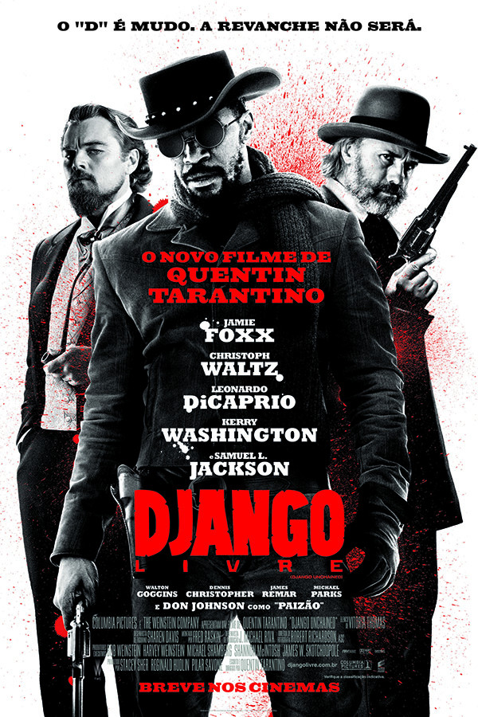
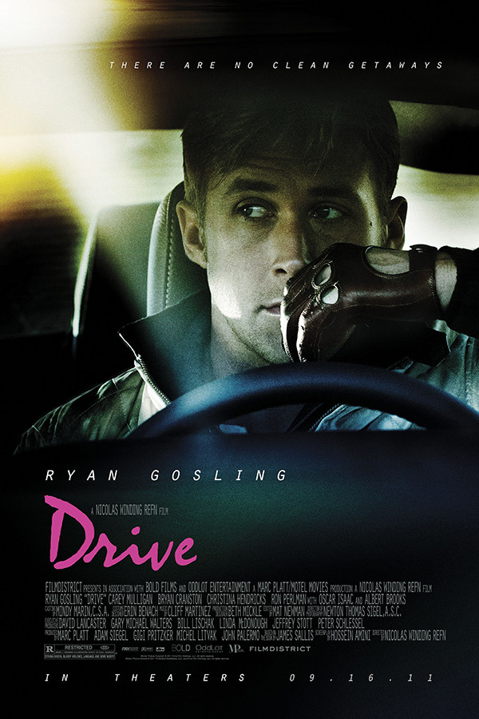
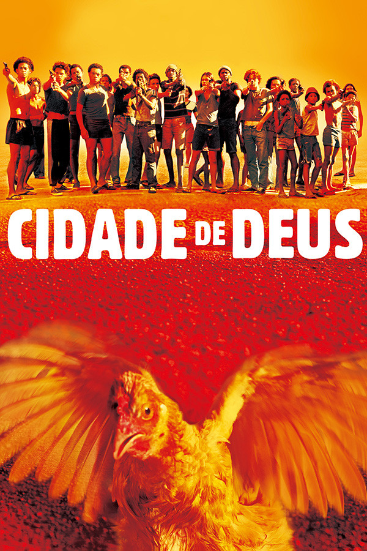

No sul dos Estados Unidos, o ex-escravo Django faz uma aliança inesperada com o caçador de recompensas Schultz para caçar os criminosos mais procurados do país e resgatar sua esposa de um fazendeiro que força seus escravos a participar de competições mortais.
Um habilidoso motorista, que é dublê em cenas de perseguição em filmes de Hollywood, também usa seu talento no volante para ser piloto de fuga em assaltos. Seu estilo de vida solitário e misterioso começa a mudar no momento em que se apaixona por uma mulher cujo marido está prestes a sair da prisão. Enquanto isso, o chefe da sua oficina mecânica está tentando organizar uma corrida com dinheiro sujo.
Buscapé é um jovem pobre, negro e sensível, que cresce em um universo de muita violência. Ele vive na Cidade de Deus, favela carioca conhecida por ser um dos locais mais violentos do Rio. Amedrontado com a possibilidade de se tornar um bandido, Buscapé é salvo de seu destino por causa de seu talento como fotógrafo, o qual permite que siga carreira na profissão. É por meio de seu olhar atrás da câmera que ele analisa o dia a dia da favela em que vive, onde a violência aparenta ser infinita.
